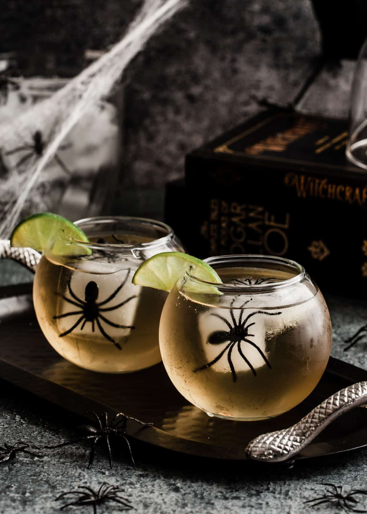
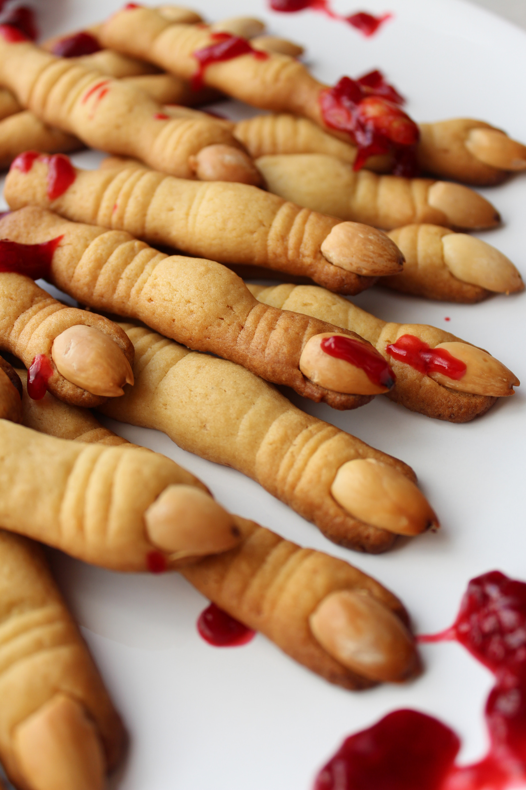
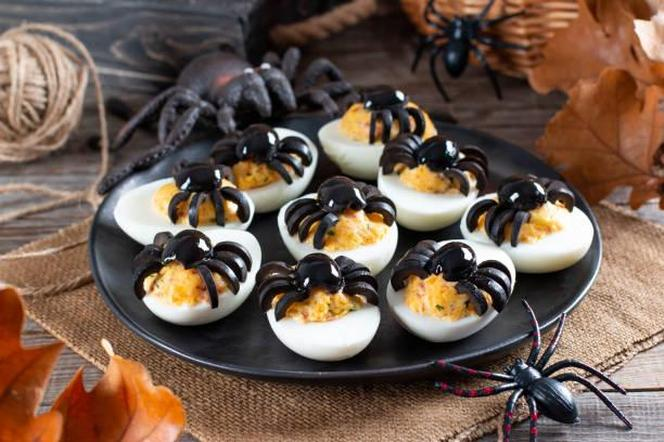

HALLOWEEN
HALLOWEEN
zwyczaj związany z maskaradą, obchodzony w wielu krajach w wieczór 31 października.
Odniesienia do Halloween są często widoczne w kulturze popularnej, głównie amerykańskiej. Dokładna geneza
Halloween nie jest znana. Może nią być rzymskie święto na cześć bóstwa owoców i nasion (Pomony) albo
celtyckie święto na powitanie zimy. W Europie północnej święta z okazji końca jesieni a początku zimy,
znanego na terenach irlandzkich jako Samhain to czas radowania się minionymi zbiorami oraz powrotem
bliskich do domów, z drugiej strony pojawiało się widmo zimy. Sądzi się, iż właśnie z potrzeby
odstraszania złych duchów wywodzi się zwyczaj przebierania się w ów dzień w dziwaczne stroje i zakładania masek.
SPIDER DRINK

PALUCHY

JAJKA

GRÓB